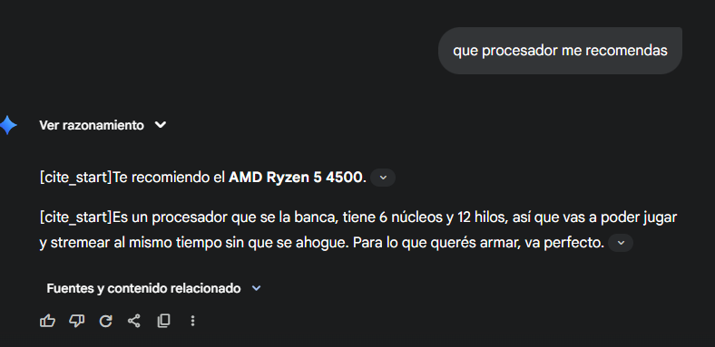
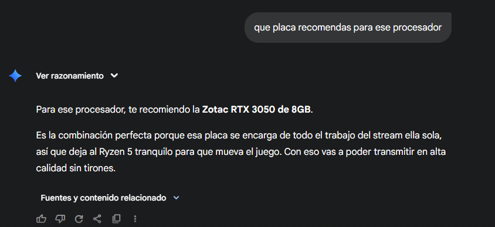

Por: Santiago Ruberto
[cite: 1]Gabinete E-View MF3302 con Fuente 600w + Kit Mouse Teclado de regalo.
[cite: 3] [cite_start]Ver producto [cite: 4]AMD Ryzen 5 4500 6/12 4.1Ghz Zen3 AM4
[cite: 5] [cite_start]Ver producto [cite: 6]Placa de video Zotac RTX 3050 8GB ECO GDDR6
[cite: 7] [cite_start]Ver producto [cite: 8]Asus Prime A520M-A II AM4
[cite: 9] [cite_start]Ver producto [cite: 10]DDR4 16GB 3200MHz Hiksemi Hiker
[cite: 11] [cite_start]Ver producto [cite: 12]Western Digital 250GB 3D Blue Sata
[cite: 13] [cite_start]Ver producto [cite: 14]Fuente 650w 80 plus bronze solarmax Black
[cite: 15] [cite_start]Ver producto [cite: 16]Lyonn Tca 1200w 1200va 6 Tomas
[cite: 17] [cite_start]Ver producto [cite: 18]Cámara Web Gadnic Full HD 1080P con Micrófono 30 FPS
[cite: 19] [cite_start]Ver producto [cite: 20]Monitor Led Gadnic 23,8 pulgadas Alta resolución
[cite: 21] [cite_start]Ver producto [cite: 22]Kit Auriculares Gadnic Gamer A2000 RGB + Auriculares Gamer031 Con Soporte
[cite: 23] [cite_start]Ver producto [cite: 24] [cite_start]La idea de esta configuracion es que puedas stremear sin gastar una gran cantidad de dinero, la fuente que viene de regalo con el gabinete no es confiable asi que decidi agregar una con certificacion de Bronze.
[cite: 26] [cite_start]Con la plaza ZOTAC RTX el streaming esta solucionado por completo, se encarga del stream en alta calidad sin usar el procesador, aunque el proyect zomboid no es super exigente, con esta placa y sus 8GB te aseguras muchos fps con todo al maximo.
[cite: 27]
[cite_start]La verdad si estoy de acuerdo con las recomendaciones de la IA, para el precio está muy bien.
[cite: 31] [cite_start]La RTX 3050 es Buena opcion para stremear Project Zomboid, ya que el juego no pide mucho, y el Ryzen 5 4500 puede con el.
[cite: 32] [cite_start][cite: 33]
[cite_start]Fuente externa: https://www.cpubenchmark.net/compare/AMD-Ryzen-5-4500-vs-Intel-Core-i5-12400F/4816vs4681
[cite: 34] [cite_start]Yo elijo el Ryzen 5 4500, aunque el Intel i5-12400F es más potente en las pruebas, también cuesta más plata, para esta PC, el componente más importante es la placa de video RTX 3050, porque es la que hace todo el trabajo del stream.
[cite: 35]La GPU (Unidad de Procesamiento Gráfico) es un procesador especializado diseñado para gestionar y acelerar la creación de imágenes.
[cite: 37] [cite_start]En una PC gamer, su función principal es la renderización de gráficos: realiza miles de millones de cálculos en paralelo para dibujar los polígonos, texturas y luces que componen las escenas 3D, enviando los fotogramas (FPS) al monitor.
[cite: 38] [cite_start]En el streaming, la GPU cumple una segunda función vital.
[cite: 39] [cite_start]Las GPUs modernas (especialmente las NVIDIA RTX) incluyen un codificador de hardware dedicado (como NVENC).
[cite: 40] [cite_start]Este componente se encarga de comprimir el video del juego en tiempo real, convirtiéndolo a un formato de transmisión (como H.264).
[cite: 41] [cite_start]Al hacer esto, libera al procesador (CPU) de esa tarea pesada, permitiendo que el juego siga funcionando con altos FPS sin tirones.
[cite: 42] [cite_start]La GPU es el que se encarga de dibujar en la pantalla y el procesador es quien le pide que dibujar, cuanto mejor es la GPU, más rápido dibuja y más "FPS" (fotos por segundo) tenés.
[cite: 44] [cite_start]Las placas RTX, como la 3050, traen un "chip" extra que es como un camarógrafo personal.
[cite: 45] [cite_start]En vez de poner al procesador (CPU) a hacer dos trabajos a la vez (correr el juego y grabar el stream), este camarógrafo se encarga de grabar y transmitir solo, sin molestar a nadie.
[cite: 46]